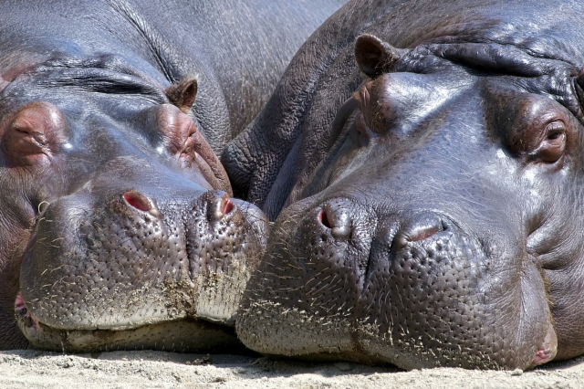

| カバとは |
偶蹄目/鯨偶蹄目カバ科カバ属に分類される偶蹄類です。
「カバ」を意味するラテン語: hippopotamus （ヒッポポタムス）をそのまま用いたもので、大プリニウス『博物誌』等にも言及のある古い言葉です。
日本語では当初から「カバ」と読まれていたかは不明であり、19世紀後半の書籍には「かはむま」と振っている例もあります。 |
| アンサー① |
ブタに似た体つきですが、イノシシ類よりも( ウシ )と近縁であるとされています。 |
|
|
ウシと近縁でクジラとの遺伝的関係が最も近い陸上動物であると、DNA分析で判明した。
|
| アンサー② |
分厚い( 脂肪 )で覆われていますが、表皮は非常に薄く、乾燥すると裂けてしまいます。 |
|
|
このため、毛細管現象により水分は外側へ放出してしまいます。
皮膚表面を保護するため、「血の汗」と呼ばれるピンク色の粘液を分泌する腺があります。
|
| アンサー③ |
顎の筋肉が非常に発達しており、口を( 150度 )まで開くことができます。 |
|
|
巨大な口には、長く先のとがった門歯と犬歯が生えています。
下顎2本の重量はオス2.1キログラム、メス1.1キログラムに達することもあります。
|
| アンサー④ |
侵入した( ワニ )を襲うなど、野生のカバは非常に獰猛です。 |
|
|
ヌーやインパラを捕食しようとしているワニを妨害したという例もあります。
|
| アンサー⑤ |
妊娠期間は210～240日で、平均寿命は( 約30年 )です。 |
|
|
出産前もしくは子を守ろうとする雌は、雄以上に気性が荒くなります。
|
| アンサー⑥ |
比重が水（ よりも大きい )ため体が水に沈み、水底を歩くことができます。 |
|
|
素早く水中を移動するときは後肢を用いることもあります。潜水時間は1分で、最長で5分です。
|